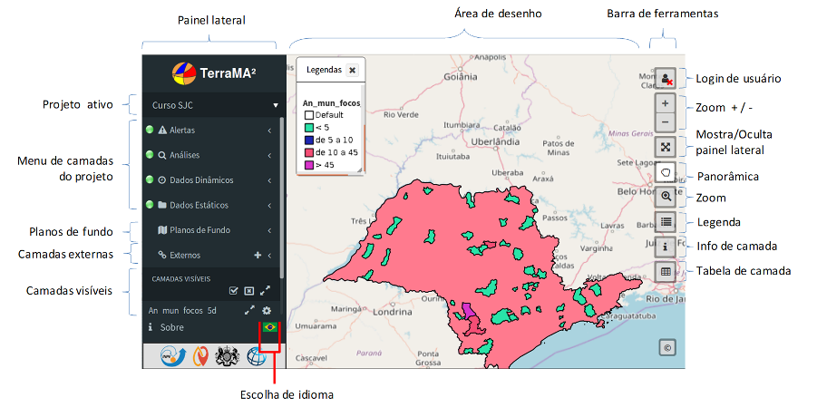
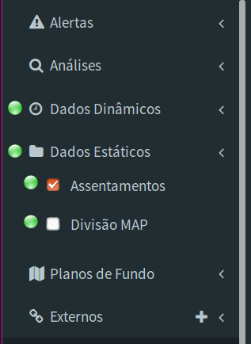
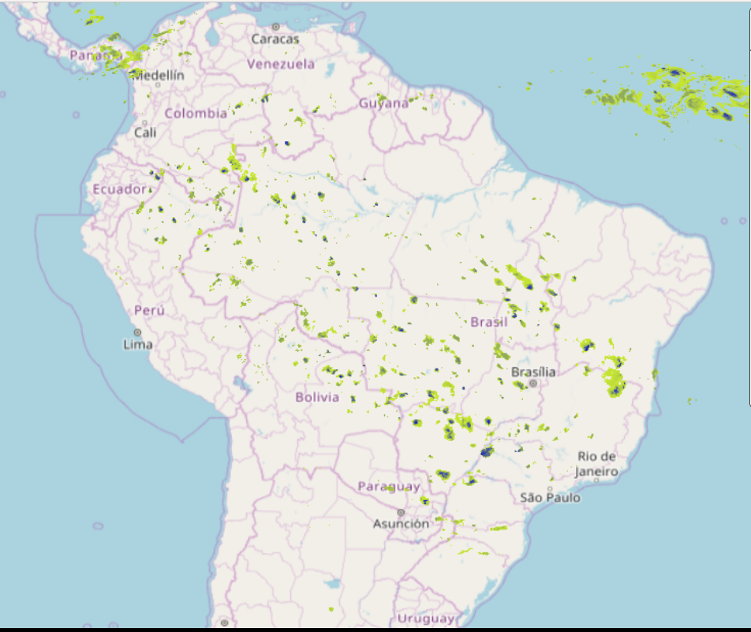
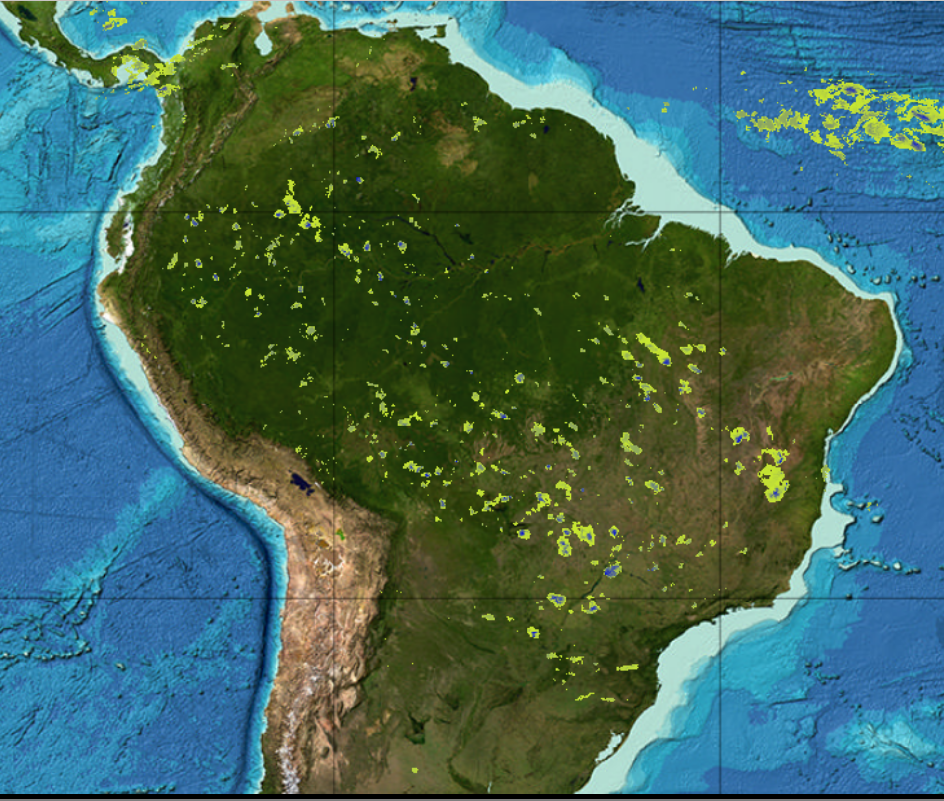
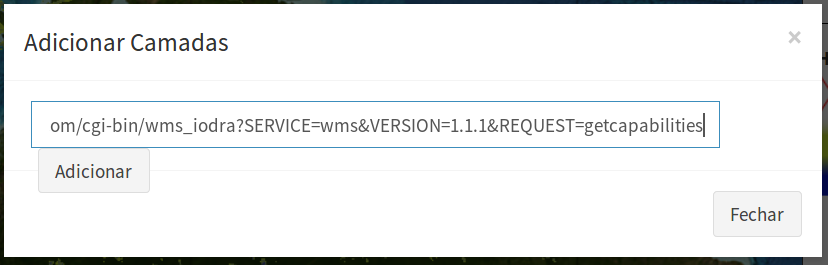
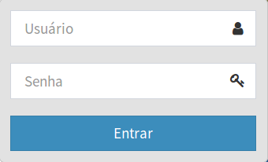
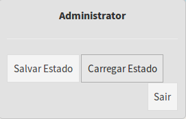

Módulo de Monitoramento
O “Módulo de Monitoramento” é utilizado para apresentar os dados estáticos, dinâmicos, análises e alertas de qualquer projeto disponível por uma instância da plataforma TerraMA2. Esse módulo da plataforma TerraMA2 utiliza uma interface web que pode ser acessada a partir de qualquer navegador. A Figura 6.1 mostra a tela desse módulo com destaque aos principais componentes.

Figura 6.1 – Módulo de Monitoramento.
Os principais itens da interface deste módulo são:
- Painel Lateral : barra de acesso aos dados que serão apresentados na área de desenho.
- Projeto ativo : nome do projeto ativo. Clique para trocar de projeto. Todos os projetos independente do usuário estarão disponíveis.
- Menu de camadas do projeto – Alertas : acesso a camadas de alertas do projeto ativo.
- Menu de camadas do projeto – Análises : acesso a camadas de análises do projeto ativo.
- Menu de camadas do projeto – Dados Dinâmicos : acesso a camadas de dados ambientais dinâmicos do projeto ativo.
- Menu de camadas do projeto – Dados Estáticos : acesso a camadas de dados estáticos (mapas geográficos vetoriais ou matriciais) do projeto ativo.
- Planos de Fundo: acesso a camadas planos de fundos. Disponíveis a camada do Open Street Map e a camada do General Bathymetric Chart of the Oceans (GEBCO)
- Camadas externas: acesso a camadas através de web-service WMS.
- Camadas visíveis: acesso a camadas marcada para visualização. Controle da ordem de apresentação entre outras ferramentas estão disponíveis.
- Escolha de idioma: clique na bandeira para escolher o idioma. Disponível português, inglês ou espanhol.
- Área de Desenho : área destinada a apresentação dos dados geográficos.
- Barra de ferramentas – Login de usuário : acesso o usuários cadastrados. Camadas privadas só serão apresentadas quando usuário estiver conectado.
- Barra de ferramentas – Zoom + / - : amplia ou reduz a visualização dos dados na área de desenho.
- Barra de ferramentas – Mostra/Oculta painel lateral : retira o painel lateral para maior espaço na área de desenho.
- Barra de ferramentas – Panorâmica : habilita cursor para mover a área de desenho sem alterar a escala
- Barra de ferramentas – Zoom : habilita o cursor de zoom na área de desenho. Clique e arraste o cursor para delimitar a área a ser ampliada.
- Barra de ferramentas – Legendas : habilita ou esconde a legenda da área de desenho. A legenda de todas as camadas visíveis são apresentadas na janela aberta.
- Barra de ferramentas – Info de camada : habilita cursor de informações da camada escolhida. Após escolher a camada visível clique sobre o mapa na área de desenho.
- Barra de ferramentas – Tabela da camada : habilita na parte inferior da área de desenho a tabela de atributo da camada corrente. Na parte superior da tabela escolha a camada desejada.
Iniciando o Módulo de Monitoramento
Para acesso ao módulo de monitoramento basta ter acesso a um navegador e digitar “http://localhost:36001” para acesso local. Para acesso remoto, consulte o administrador de sua rede para se informar do endereço a ser utilizado. O módulo apresenta todas as camadas definidas no menu de Visualizações ou Alertas no “Módulo de Administração” do projeto ativo.
Manipulação de Camadas
No painel lateral estão disponíveis todas as camadas de cada item do projeto, as camadas de plano de fundo e outras camadas externas. As camadas do projeto estão divididas em 4 tipos, Dados estáticos, Dados Dinâmicos, Análises e Alertas.
Apresentação de Camadas
Camadas do Projeto
Para as camadas do projeto, clique sobre o tipo desejado e sobre a caixa branca a esquerda do nome da camada. A camada é apresentada na área de desenho. Clique novamente para desmarcar. A camada marcada ficará disponível na lista de “CAMADAS VISÍVEIS” (Figura 6.2).
 
Figura 6.2 – Módulo de Monitoramento - Seleção de camadas - A camada selecionada fica disponível na lista de camadas visíveis.
Para ajustar a apresentação da camada ao tamanho da área de desenho (estender a área da camada a área de desenho) clique no botão de setas opostas ( ⤢ ) correspondente a camada deseja na lista de camadas visíveis. Caso mais de uma camada esteja visível, poderá optar por ajustar a união das áreas das camadas a área de desenho, para isso utilize o mesmo botão disponível a direita de “CAMADAS VISÍVEIS.
Dica: Para desmarcar todas as camadas que estiverem visíveis de uma única vez, basta utilizar o botão ⛝ a direita de “CAMADAS VISÍVEIS.
Camadas de Plano de Fundo
Para as camadas de plano de fundo as opções de visualização são exclusivas, isto é, somente uma de cada vez é selecionada para visualização. Se desejado nenhuma camada de fundo basta clicar sobre a camada que estiver marcada.
As opções disponíveis nessa versão são as camadas do Open Street Map e a do General Bathymetric Chart of the Oceans (GEBCO). A camada marcada ficará disponível na lista de “CAMADAS VISÍVEIS” (Figura 6.3).
 
Figura 6.3 – Módulo de Monitoramento - Camadas de fundo OpenStreetMap e GEBCO.
Camadas Externas
As camadas externas são definidas pelo usuário pois podem ser incluídas através de servidores web públicos através do serviço WMS (Web Map Service). Clique no botão “ + ” à direita de “Externos”. Uma janela será aberta para inserir o endereço URI do serviço WMS. A Figura 6.4 mostra a janela a ser utilizada. Copie e cole o endereço desejado e clique em “Adicionar”.

Figura 6.4 – Módulo de Monitoramento - Adição de camadas externas em WMS.
Dica: A seleção das camadas que estiverem selecionadas em “CAMADAS VISÍVEIS, assim como a área de desenho selecionada podem ser salvas para posterior uso. Para salvar o estado da área de desenho é necessário que um usuário esteja conectado. Mais detalhes em “Configurações do Usuário”.
Configurações do Usuário
Para acesso ao “Módulo de Monitoramento” não é necessário “login” de usuário. Neste caso, somente as camadas que não foram definidas como privadas (Veja Capítulo 4 sobre visualização e alertas privados) devem estar disponíveis. Camadas que foram definidas como “Privado” necessitam de acesso através de “Usuário” e “Senha”. O botões abaixo indicam se há conexão por algum usuário ou não:
- : Sem acesso por usuário.
- : Usuário cadastrado conectado.
Para efetuar login clique no botão e digite o nome do “Usuário”, “Senha” e clique em “Entrar” (Figura 6.5).

Figura 6.5 – Módulo de Monitoramento - Login de usuário cadastrado.
Obs: Para cadastrar um usuário somente um com privilégio de administrador poderá fazer no “Módulo de Administração”. Veja como gerenciar usuários no Capítulo 2 - “Usuários”.
Para efetuar logout clique no botão e “Sair” na janela apresentada (Figura 6.6).

Figura 6.6 – Módulo de Monitoramento - Logout e Estado do usuário conectado.
Estado do Usuário
O estado das camadas selecionadas e a posição selecionada na área de desenho pode ser salva quando há um usuário conectado. Nessa versão da plataforma somente o último estado pode ser salvo ou atualizado.
Para salvar ou carregar o último estado clique no botão e escolha “Salvar Estado” ou “Carregar Estado” na janela apresentada (Figura 6.6).
Created with the Personal Edition of HelpNDoc: Free CHM Help documentation generator